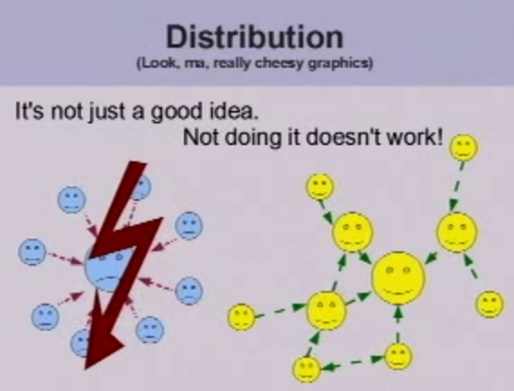

Git Collaboration
...Coding is better, together
Updated By
Alex Niderberg / @AlexNiderberg
Master Software Engineer @ Capital One Labs
Software Development Life Cycle


What is Git?
- distributed version control system
- allows you to work off-line
- provides a collaboration framework
Linus 2007 git overview
 Source: Linus 2007 Git IntroductionCentralized VCS
 Source: Illustrated Distributed Version Control
Source: Illustrated Distributed Version Control
Distributed VCS
 Source: Illustrated Distributed Version Control
Source: Illustrated Distributed Version Control


Animation Demo
Key Git Concepts
- Staging Area / Working Copy
- Commit Object
- .git repository
- Branches
- Stashing
- Merging
Edit / Stage / Commit


What does commit object hold?
- reference to parent commit, if any
- tree - set of files conveying current state of the project
- author info, commiter info, commit message, etc.
Commit object is uniquely identified by a 40-character SHA1 hash
Git Repository
Git stores information about your project in .git subdirectory called as repository
What does .git include?
- commit objects
- HEAD - a set of reference to commit objects
- ..more..
Branching
A branch is collection of commit objects
When intializing a git repo the default branch is master
(1) -- (2) -- (3)
|
master
|
HEAD
HEAD points to commit (3) on master branch

Stashing

Switching to a new branch
# creates a new branch
$ git branch [new-branch-name]
# move HEAD to point to new branch
$ git checkout [new-branch-name]
$ git checkout -b [new-branch-name]
Example workflow
- Create a new branch
- Make code changes
- Commit changes
- Run tests on code
- If test success merge those changes back to master branch
Merging
$ git merge [branch-name]
Before merging
bug-fix
|
+----(4)----(5)
/
(1) -- (2) -- (3)
|
master
|
HEAD
$ git merge bug-fix
bug-fix
|
+----(4)----(5)+
/ \
(1) -- (2) -- (3)----------(6)
|
master
|
HEAD
(6) contains changes between (5) and (2) merged into (3)
Git in Action
- Status
- Init
- Clone
- Diff
- Commit
Check for git repo
$git status
fatal: Not a git repository (or any of the
parent directories): .git
Initializing Repository
$ mkdir [project-name]
$ cd [project-name]
$ git init
git-collab/
.git/
config
description
HEAD
hooks/
info/
objects/
refs/
Cloning existing repository
$ git clone [git-url]
$ git clone https://github.com/vmaliwal/git-collab.git
Untracked Changes / Files
$ git status
On branch master
Your branch is up-to-date with 'origin/master'.
Changes not staged for commit:
(use "git add ..." to update what will be committed)
(use "git checkout -- ..." to discard changes in working directory)
modified: README.md
modified: index.html
Untracked files:
(use "git add ..." to include in what will be committed)
images/CentralizedVCS.png
images/DistributedVCD.png
images/LinusViewDVCS.png
no changes added to commit (use "git add" and/or "git commit -a")
Git Diff
$ git diff README.md
diff --git a/README.md b/README.md
index f08ca69..10ea20b 100644
--- a/README.md
+++ b/README.md
@@ -1 +1,9 @@
-### Introduction to Git
\ No newline at end of file
+### Introduction to Git
+
+- run
+```
+npm install
+grunt serve
+```
+
+- Make changes by modifying index.html
\ No newline at end of file
Creating a commit object
Create a new file or modify existing
$ echo "Introduction to Git" > README
$ git status
# On branch master
#
# Initial commit
#
# Untracked files:
# (use "git add [file]..."
# to include in what will be committed)
#
# README
$ git add [file-name]
$ git commit -m "Initial commit"
Also
$ git add . //to add all modified files, or
$ git commit -a -m "Initial commit"
Git commit -a #is the same as using git add and then git commit
git config --global color.ui true
Additional Git Concepts
- Git Config
- .gitignore
- git diff [ --staged | --cached ]
- git add --patch
- git [command] --help or man git
Git Config
- $ git config --list
- $ git config --global user.name "Your Name"
- $ git config --global user.email yourEmail@gmail.com
- $ git config --global push.default simple #remove verbose messaging about the git 2.0 change
- $ git config --global core.editor "subl -n -w" #editor for commit messages
- $ git commit -a #will bring up sublimetext so you can enter you commit message

.gitignore the unsung hero
- It is very important to have this file in your project root directory to avoid merge conflicts from auto-generated code from VM, IDE, etc.
- Google for gitignore nodejs/golang/java/android/iOS
Diff Options
#git diff [ --staged | --cached ]
$ git status
# At least 1 file is staged
$ git diff --staged
# Reveals the staged changes
$ git reset #to push those changes back to the working copy
Break Changes into Smaller Pieces
#git add --patch [file]
$ git add --patch
#Use s for smaller y, n, ...
Get Git Help
#git [command] --help or man git
$ git diff --help
$ man git
# Then use / to search for --ca
Collaboration
Distributed version control model to collaborate between multiple developers.
- Remote repository
- Pull remote changes
- Push local changes to remote
Remote repository
Remote repositories are versions of your project that are hosted on the Internet or network somewhere.
- Create a new remote repository(on github, bitbucket, etc.) and clone to your local machine. Or,
- Add existing git repo from your local machine to remote
Create a new remote repo and clone to your local machine
- Create new remote repository on github or bitbucket
- $ git clone [git-remote-repo-url].git
As name suggests clone command can be used to clone any remote repository
Add existing git repo from local machine to remote
Create new repository on github or bitbucket
On your local machine..
$ git remote add origin [git-remote-repo-url].git
$ git push -u origin master
origin is a remote repository reference that git uses
Pulling remote changes
$ git pull [remote-repo-reference] [remote-branch-name]
$ git pull origin master
Pushing changes to remote
$ git push [remote-repo-reference] [remote-branch-name]
$ git push origin master
Multiple Remotes
origin https://github.com/aln787/git-collab.git (fetch)
origin https://github.com/aln787/git-collab.git (push)
14109fd767af:git-collab xvo202$ git remote add kdc https://github.kdc.capitalone.com/xvo202/git-collab.git
14109fd767af:git-collab xvo202$ git remote -v
kdc https://github.kdc.capitalone.com/xvo202/git-collab.git (fetch)
kdc https://github.kdc.capitalone.com/xvo202/git-collab.git (push)
origin https://github.com/aln787/git-collab.git (fetch)
origin https://github.com/aln787/git-collab.git (push)
Fork and Pull

Merge conflicts
While pulling or merging a branch merge conflicts can occur due to conflicting changes

$ git checkout -b develop

$ git branch
* develop
master
$ git checkout master

$ git merge develop
Auto-merging app.js
CONFLICT (content): Merge conflict in app.js
Automatic merge failed; fix conflicts and then commit the result.

$ git mergetool

Tips and Tricks

- If you are ever unsure what to do when using Git, copy your project directory.
Setting Up SSH Keys
$ ls -al ~/.ssh
$ ssh-keygen -t rsa -b 4096 -C "youremail@email.com"
$ eval "$(ssh-agent -s)"
$ ssh-add ~/.ssh/id_rsa
$ cat ~/.ssh/id_rsa.pub
Then add the output of the cat to your list of github ssh keys on the github site.
Additional Git Commands
- git diff HEAD^ --word-diff
- git config --global help.autocorrect1
- git config --global color.ui 1
- git commit --amend -C HEAD
- Use this to add changes you forgot to add to the last commit that are currently staged